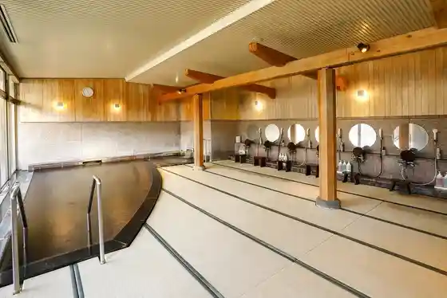
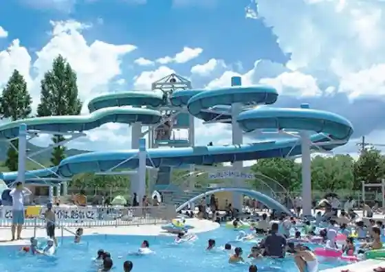
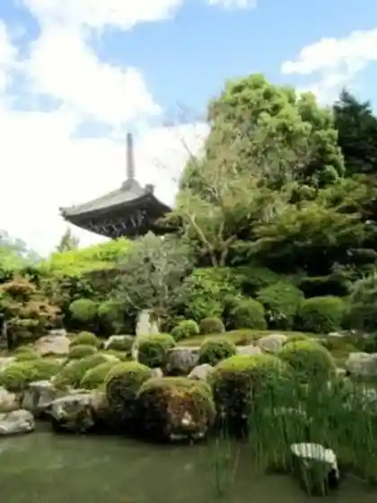

Kuwa Yama Shrine
Kameoka, Kyoto · 0771-22-1023
Gareria Kameoka
Kameoka, Kyoto · 0771-29-2700
Satoyama no Kyujitsu Kyoto Kemuri Kawa
Kameoka, Kyoto · 0771-26-2345

Kameoka Sports Park Puru
Kameoka, Kyoto · 0771-22-8810

Ano Tera
Kameoka, Kyoto · 0771-24-0809

Izumo Dai Shrine no Manai no Mizu
Kameoka, Kyoto · 0771-24-7799
Izumo Dai Shrine
Kameoka, Kyoto · 0771-24-7799
Kameoka Sports Park
Kameoka, Kyoto · 0771-25-0372
Sangasutajiamu by KYOCERA (Kyotofuritsu Kyoto Sutajiamu)
Kameoka, Kyoto · 0771-25-3331
Ippan Shadanhojin Kameoka Tourism Association
Kameoka, Kyoto · 0771-29-5152
Kawa no Eki Kameoka Suihen Park
Kameoka, Kyoto · 0771-55-9755
Senjuji
Kameoka, Kyoto · 0771-23-1434
Tan Yama Shuzo
Kameoka, Kyoto · 0771-22-0066
Sumato ! Kamemaru Kanko Rentasaikuru
Kameoka, Kyoto · 0771-22-0691
Hozugawa Suihen Park Babekyu Ba (Oto Campground)
Kameoka, Kyoto · 0771-56-9380
Yu no Hana Onsen
Kameoka, Kyoto · 0771-22-5645
Ganko Kameoka Rakuraku So
Kameoka, Kyoto · 0771-56-8880
Kyo YUNOHANA RESORT Suisen
Kameoka, Kyoto · 0771-22-7575
Hosen Tera Zen Center
Kameoka, Kyoto · 0771-24-0378
Tamba Kameyama Castle Ruins
Kameoka, Kyoto · 0771-22-5561
Oishi Shuzo
Kameoka, Kyoto · 0771-22-0632
Bikkusumairu Hozugawa Rafuteingu
Kameoka, Kyoto · 0771-29-5370
Tamba Shichifukujin Meguri (Yawara Gi no Michi)
Kameoka, Kyoto · 0771-22-0691
Shoen So Hozugawa Tei
Kameoka, Kyoto · 0771-22-0903
Sumiya Kiho Iori
Kameoka, Kyoto · 0771-22-7722
Kyo Gohanto Rotemburo no Yado Yu no Hana Gatsu Ya
Kameoka, Kyoto · 0771-22-2400
Tani Sei Tera (Mitsuhide Tera)
Kameoka, Kyoto · 0771-26-2054
Kameoka Shichi Tanigawa Yagaikatsudo Center
Kameoka, Kyoto · 0771-24-6411
Bussan City Ba Atorio
Kameoka, Kyoto · 0771-24-8888
Nagomi Village Asahi
Kameoka, Kyoto · 0771-25-7537
Taira no Sawa Park (Mizutori no Michi)
Kameoka, Kyoto · 0771-22-0691
Para Park Kyoto
Kameoka, Kyoto · 090-2285-7243
Fujii to En
Kameoka, Kyoto · 0771-26-2264
Omotenashi no Yado Keizan Kaku
Kameoka, Kyoto · 0120-417-004
Mori no Suteshon Kameoka
Kameoka, Kyoto · 070-2275-1466
(Hanare)
Kameoka, Kyoto · 070-2319-9360
Kameoka Bunka Museum
Kameoka, Kyoto · 0771-22-0599
Kan Shuzo
Kameoka, Kyoto · 0771-22-0056
Sakura Park
Kameoka, Kyoto · 0771-25-9786
Inu Kan Nokaze Tsuchi Kan (Ki Raku)
Kameoka, Kyoto · 0771-27-2189
Hie Tano Shrine
Kameoka, Kyoto · 0771-22-4549